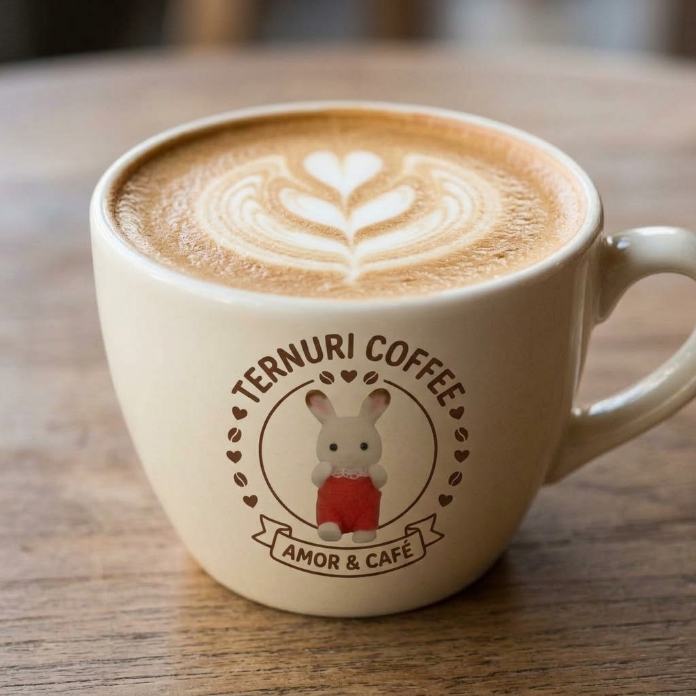
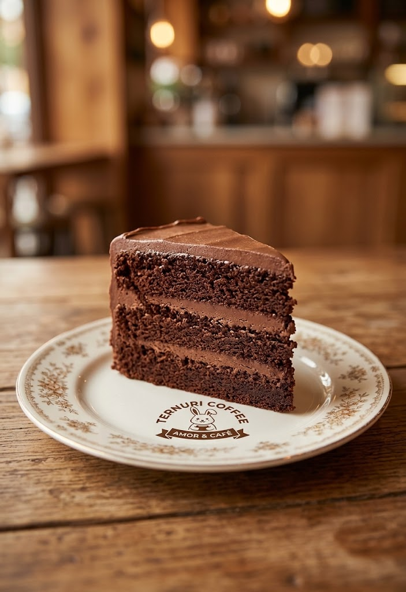
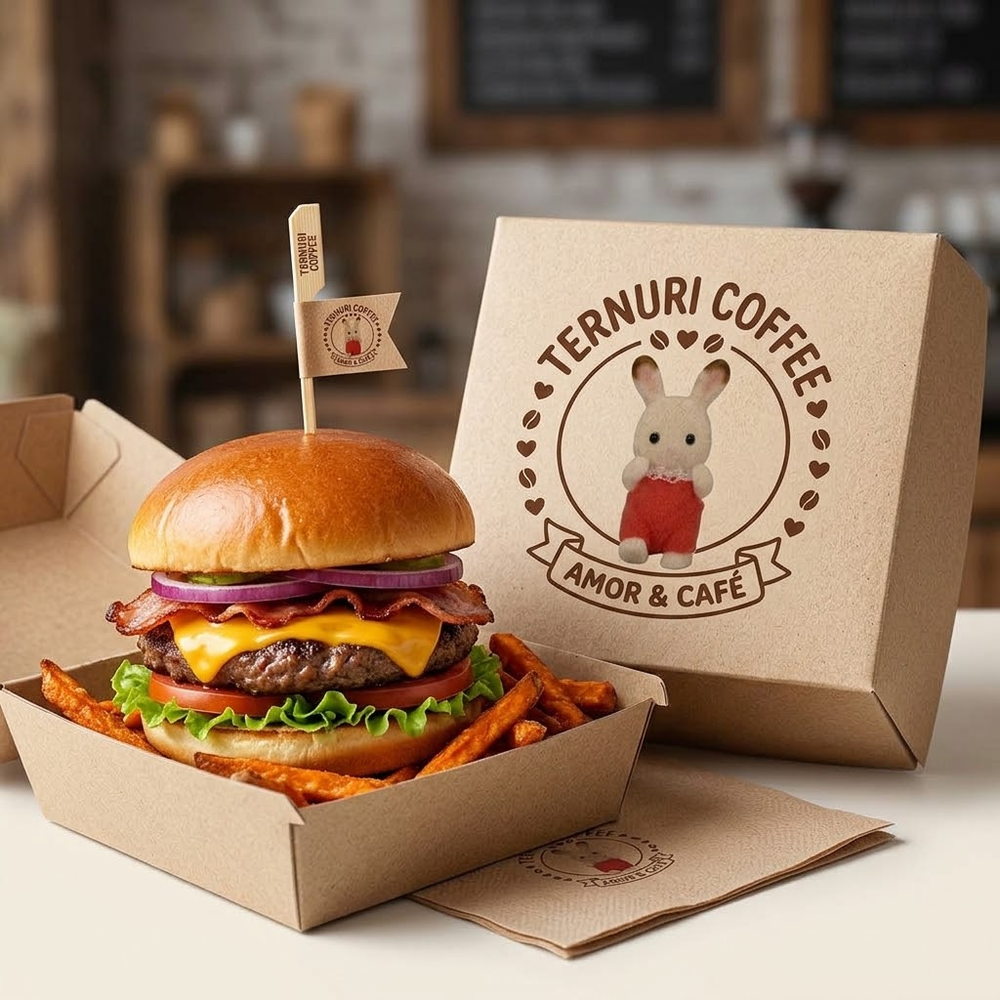

MENÚ
ternury Latte
La suavidad perfecta para tus mañanas o tardes. Disfruta de la armonía entre un shot de espresso premium y la textura cremosa de la leche al vapor, servido con una delicada capa de espuma y nuestro toque de latte art. Un abrazo reconfortante en cada sorbo, hecho con todo el amor de Ternuri Coffee.
Q25.00

ternury cake
El clásico preferido para consentirte. Una suave y jugosa rebanada de pastel de chocolate de varios pisos, intercalada con capas de cremosa cobertura de cacao y decorada con virutas de chocolate premium. El acompañamiento dulce e irresistible para disfrutar con tu café favorito en Ternuri Coffee.
Q32.00

ternury matcha
Disfruta del equilibrio perfecto entre energía y frescura. Nuestro matcha ceremonial de la más alta calidad, batido con leche cremosa, hielo y coronado con una suave capa de crema batida con un toque de polvo de matcha. Una bebida súper refrescante, llena de antioxidantes y hecha con todo el amor de Ternuri Coffee.
Q42.00

ternury chesee burguer
Nuestra irresistible hamburguesa artesanal preparada al momento. Disfruta de un jugoso medallón de carne de res a la parrilla, queso cheddar derretido, tocino crujiente, cebolla morada y vegetales frescos, todo entre dos panes suaves y tostados con mantequilla. Acompañada de crujientes papas fritas y servida en nuestro empaque especial.
Q65.00
